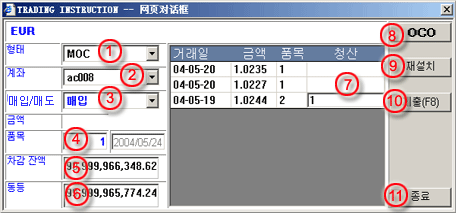

MOO/MOC 주문
거래 지시사항 대화창이 거래 패널을 통해 활성화되면, 다음 정보를 완성하세요:
| 1 | 유형 - Market Open(시장 개방
개방)에 대해선 MOO를, Market On Close(시장 폐쇄)에 대해선 MOC를 선택
|
 MOC 주문 작성 대화창 |
| 2 | 계좌 - 주문에 대한 거래계좌 선택 | |
| 3 | B/S - 주문에 대한 구매/판매 (Buy/Sell) 선택 | |
| 4 | Lot - 거래에 대한 계약량 입력 | |
| 5 | 차액잔고 - 선택된 계좌의 한계 잔고 | |
| 6 | 순가 - 선택된 계좌의 한계 순가 | |
| 7 | 마감 - 거래이 정산 목적이면 개방 주문에 상응하는 양 입력 | |
| 8 | OCO - 해당사항 없음 | |
| 9 | Reset - 마감을 위해 입력된 양을 reset하기 위한 버튼 | |
| 10 | 제출 (F8) - 거래 데스크에 주문을 제출하기 위한 버튼 | |
| 11 | 퇴장 - 거래 지시사항 대화창을 퇴장하기 위한 버튼 |
MKT 주문이성공적으로거래데스크에놓이면, 수락을표시할참고코드와미확인상황을나타내는주문이 실행 주문 패널에 리스트화 될 것이다. 미확인 상황은 주문이 실행을 위해 확인되지 않거나 취소되지 않는 한 보여질 것이다.
유의사항: